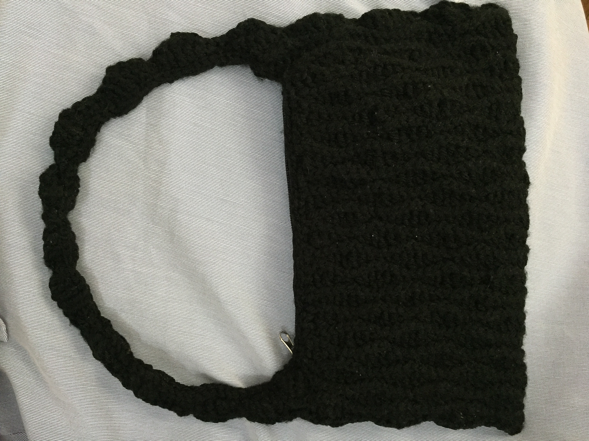
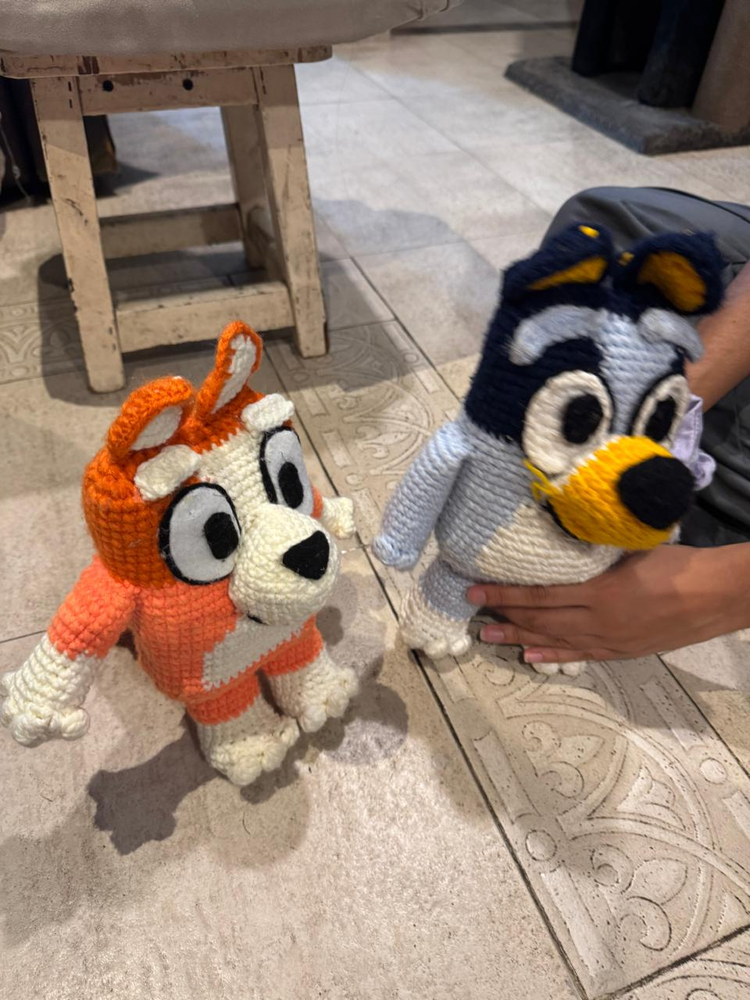
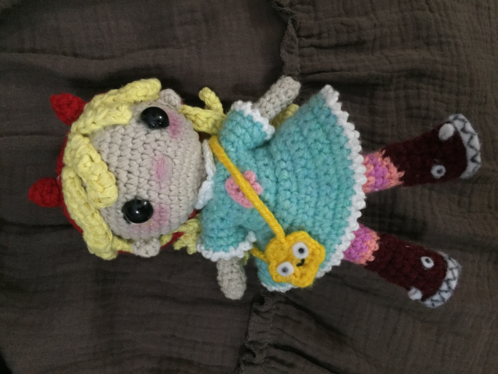
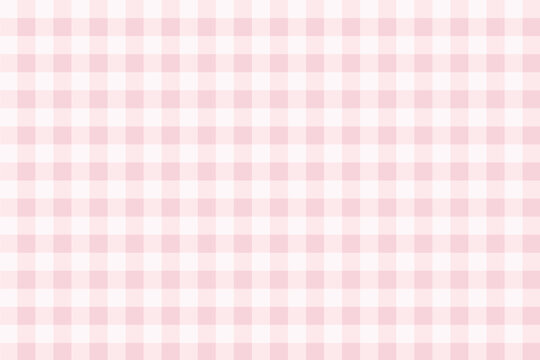

bienvenido a mi portafolio!
mi nombre es viky ♥ y este es mi espacio para mostrar mis proyectos de costura y tejido! cada uno contiene una descripción sobre su creación y enlaces para crearlo vos mismo, si es que te interesa acompañarme!
últimas cosas que hice...

bolso con ondas a crochet
disfruté muchiisisiismo de hacerlo, el punto es súper lindo y se trabaja muy rápido. punto suuuper extra porque es adaptabe a diferentes tamaños
referencias/tutoriales
bluey y bingo amigurumis
un tutorial MUY lindo de seguir, aprendés muchísimo sobre la anatomía de un peluche y es completamente diferente a otros que he hecho antes, muyyy worth it
referencias/tutoriales
star butterfly amigurumi
peluchito de starrr ♥ probablemente el trabajo masss chiquilin y detallado que hice
referencias/tutoriales